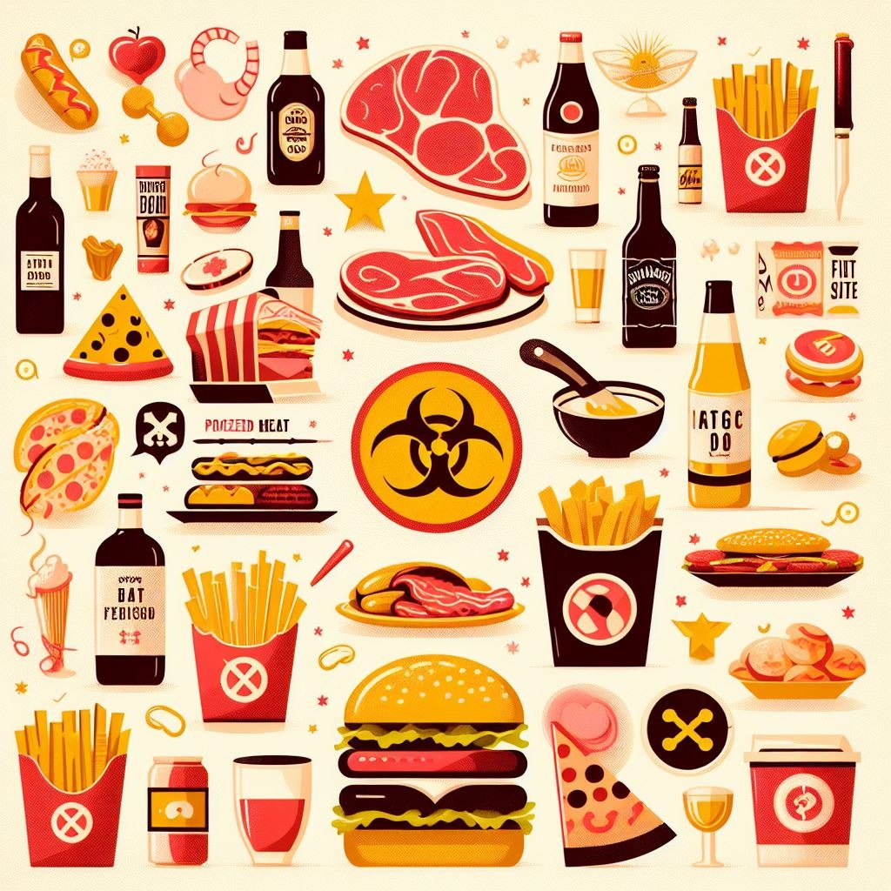
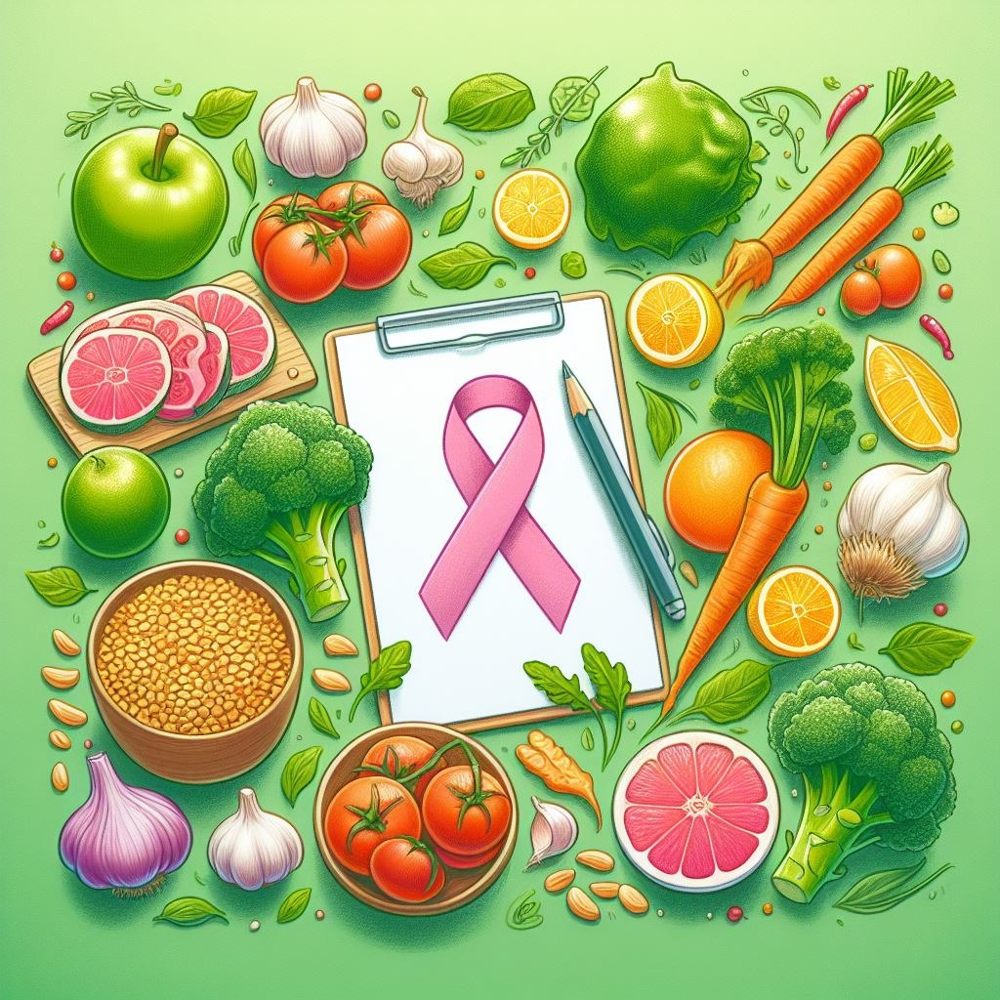

Cancer is a genetically caused disease characterized by the
uncontrolled division and spread of abnormal cells in the body.
Genetic mutations can result from DNA damage to cells or inherited
genetic defects, leading to disruptions in the mechanisms that
regulate cell division.
Differences Between Healthy and Cancer Cells. Normal and
cancer cells are both formed daily through the process of cell
division, which is necessary to replace damaged or old cells with
new ones. However, the difference lies in the fact that normal cells
have a limited number of divisions, known as the Hayflick limit,
which is about 52 divisions. Additionally, normal cells can undergo
apoptosis, a programmed cell death that removes damaged or
unnecessary cells. The immune system recognizes and eliminates
abnormal cells, but sometimes cancer can evade the immune response.
As we age, the occurrence of genetic changes that cause cancer may
increase the risk of developing the disease in older age, since the
immune system gradually becomes less effective at fighting abnormal
cells. Cancer cells are characterized by modifications in their DNA
that lead to abnormal and continuous division, after which they can
start invading and growing in other parts of the body. There is also
benign tumors, which are not cancerous but can cause problems if
located in critical areas.
Where Cancer Can Develop. Cancer can develop in any part of
the body, as there are more than 100 types of this disease, usually
named after the organs or tissues where they begin. For example,
lung cancer starts in the lungs, brain cancer in the brain, and
carcinoma refers to cancer that forms in tissues. This means cancer
can occur almost anywhere in the human body, including the blood.
Additionally, cancer cells can spread throughout the body through a
process called metastasis, where they break away from the primary
site and move to other parts of the body. This complicates treatment
and requires a comprehensive therapeutic approach.
This article will cover two categories of foods: those that
may contribute to cancer development and those that are beneficial
for its prevention. It is important to note that reducing the risk
of cancer cannot be achieved through diet alone. Supporting the
immune system plays a key role in the body’s ability to fight the
growth of cancer cells. To do this, it is essential to avoid harmful
habits such as smoking, stress, insufficient sleep, and drug use, as
these factors can promote mutations and impair immune function.
Among the healthy habits that help maintain immunity are a balanced
diet, regular physical activity, avoiding harmful foods, and leading
a generally healthy lifestyle.

🚫 Harmful Foods
This section explores the negative effects and health risks
associated with consuming harmful foods, particularly in relation
to the development of cancer, along with recommendations on how to
avoid them.
🥩 Red and Processed Meat
-
Sausages
-
Ham
-
Hot dogs
-
Bacon
-
Canned meats
-
Corned beef
-
Beef (Red meat)
-
Pork (Red meat)
-
Lamb (Red meat)
Processed meat includes any type of meat preserved through
smoking, salting, curing, or canning. Most processed meats are red
meats, which contain hemoglobin and myoglobin. When processed,
these compounds can form carcinogenic substances such as
nitrosamines. As a result, processed meat has been linked to an
increased risk of various cancers, particularly colorectal,
stomach, and prostate cancers.
Scientific studies
show that consuming just 50 grams of processed meat per day may
increase the risk of colorectal cancer by 18%.
🍔 Fried Food and Fast Food
-
Hamburgers and cheeseburgers
-
Deep-fried foods
-
Pizza (with salami and pepperoni)
-
Hot dogs
-
Sauces and dressings
-
Fried chicken and wings
-
Soft drinks and energy drinks
When starchy foods like potatoes, wheat, corn, rice, peas, and
other grains or legumes are cooked at high temperatures — through
frying, baking, roasting, or toasting — they produce a compound
called acrylamide.
Studies
confirm that acrylamide, formed during high-temperature cooking,
can damage DNA and trigger apoptosis (cell death). Consuming large
amounts of fried food increases the risk of type 2 diabetes and
obesity. These conditions can lead to oxidative stress and chronic
inflammation, further increasing the risk of cancer.
Fast food, often high in saturated fats and processed meats, has been
linked to a higher risk of cancers, especially colorectal and
breast cancer. Frequent consumption of such foods is also
associated with excess body weight, which contributes to an
overall elevated cancer risk.
🍲 Overcooked Foods
-
Grilled
-
Barbecued
-
Pan-fried
Overcooking food, especially meat, can lead to the formation of
carcinogens. Cooking at high temperatures or over an open flame
increases
the production of carcinogenic polycyclic aromatic hydrocarbons
(PAHs) and heterocyclic amines (HCAs), which may raise cancer risk
by damaging the DNA in your cells. To reduce this risk, it's
recommended to use healthier cooking methods such as pressure
cooking, baking, or pan-frying at lower temperatures, as well as
slow cooking in a pot or multicooker.
🍫 Sugar and Refined Carbohydrates
-
White sugar
-
Sugary drinks
-
Sweets and candies
-
Sweet snacks and desserts
-
Cookies and pastries
-
White pasta
-
White bread
-
White rice
Consuming foods high in sugar and starch can increase the risk of
type 2 diabetes and obesity, which contribute to inflammation and
oxidative stress — factors that raise the risk of cancers such as
ovarian, breast, endometrial (uterine), and colorectal cancer. To
reduce this impact, it's recommended to replace these items with
healthier alternatives like whole grain bread, whole wheat pasta,
brown rice, and oats. A general
guideline
is to limit added sugar intake to 25 grams per day for women and
36 grams per day for men.
🍷 Alcohol
When you consume alcohol, your liver breaks it down into
acetaldehyde — a carcinogenic compound.
Acetaldehyde
can damage DNA and contribute to oxidative stress. It can also
impair the immune system, making it harder for the body to target
precancerous and cancerous cells. In women, alcohol may increase
estrogen levels, which is linked to a higher risk of estrogen
receptor-positive breast cancer. However, moderate consumption of
red wine during dinner may have some benefits, as
studies
suggest it could reduce overall mortality and the risk of ischemic
heart disease and stroke.

✅ Healthy Foods
This section highlights foods that may help prevent the
development of cancer.
🥬 Leafy Green Vegetables
-
Kale
-
Arugula
-
Spinach
-
Mustard greens
-
Swiss chard
Leafy greens are rich in carotenoid antioxidants such as
beta-carotene, lutein, and zeaxanthin, which are linked to a
lower risk
of breast cancer. They also contain folic acid and B vitamins,
which may
protect
against cancers of the breast, mouth, larynx, pancreas, lungs,
skin, and stomach — though
research
results on these effects remain mixed and require further study.
Additionally, the antioxidants in these vegetables
help
combat free radicals that can damage cells and promote cancer
development.
🥦 Cruciferous Vegetables
-
Cabbage
-
Cauliflowers
-
Broccoli
-
Kohlrabi
-
Brussels sprouts
-
Romanesco
Cruciferous vegetables contain glucosinolate compounds that are
converted into isothiocyanates — substances known for their
anti-cancer properties.
Studies
have shown that high consumption of these vegetables is associated
with a reduced risk of breast cancer and may also be linked to a
lower risk of colorectal and colon cancer.
🧅 Allium Vegetables
-
Onions
-
Garlic
-
Leeks
Allium vegetables are rich in valuable nutrients, including
organosulfur compounds, flavonoid antioxidants, and vitamin C.
Compounds found in onions have been shown to
help
kill colon and breast cancer cells by activating apoptosis
pathways. While cooking onions may
increase
the risk of breast cancer, high consumption of raw onions may have
a mild protective effect. However, further research is needed to
better understand their impact on breast health.
🍊 Citrus Fruits
-
Orange
-
Grapefruit
-
Lemon
-
Lime
-
Mandarin
A large-scale
study
found that higher citrus fruit consumption may reduce the risk of
cancers of the gastrointestinal tract, upper respiratory tract,
and
pancreas. Including several servings of citrus fruits in your
weekly diet may help lower the risk of certain cancers. However,
it's important to note that these studies may not account for all
contributing factors, and more research is needed to fully
understand the mechanisms behind their effects.
🍓 Berries
-
Strawberry
-
Raspberry
-
Blueberry
-
Blackberry
-
Cranberry
-
Currant
-
Bilberry
-
Lingonberry
-
Rosehip
Berries are rich in anthocyanins, plant pigments with powerful
antioxidant properties that may help reduce cancer risk.
Studies
have shown that regular berry consumption may assist in the
prevention of stomach, intestinal, prostate, and breast cancers by
combating free radicals and preventing cellular damage. Including
one or two servings of berries in your daily diet can support
cancer prevention.
🐟 Fatty Fish
-
Salmon
-
Sardines
-
Mackerel
-
Cod
-
Atlantic mackerel
-
Anchovies
Including a substantial amount of fish in your diet is associated
with a
reduced
risk of gastrointestinal and colorectal cancers. Fish provides
important nutrients such as vitamin D and omega-3 fatty acids,
which are believed to have anti-recurrence properties against
cancer. Maintaining adequate vitamin D levels may offer
protection
from cancer, while omega-3 fatty acids are known to
inhibit
disease progression. To maximize these health benefits, it is
recommended to include two servings of fatty fish per week in your
diet.
🌱 Beans
-
Kidney beans
-
Black beans
-
Lentils
-
Chickpeas
-
Mung beans
Beans contain a variety of phytochemicals such as flavonoids,
phytosterols, and polyphenols, which exhibit antioxidant
properties and help protect cells from damage that may lead to
cancer development. For example, kidney beans are high in fiber,
which some
studies
suggest may help protect against colorectal cancer. Animal studies
have also shown that feeding rats black or dark blue beans before
inducing colon cancer can
block
the development of cancer cells. Therefore, including several
servings of beans in your weekly diet can increase fiber intake
and reduce the risk of cancer.
🌿 Herbs and Spices
-
Turmeric
-
Oregano
-
Basil
-
Rosemary
-
Thyme
-
Parsley
-
Ginger
-
Cinnamon
-
Cilantro
-
Coriander
-
Chili pepper
-
Flax seeds
Herbs and spices are widely known for their health benefits and
anti-cancer properties. For example, oregano contains antioxidants
like carvacrol and rosmarinic acid, which have
shown
significant anti-tumor effects against breast cancer. Curcumin,
the main active compound in turmeric, and apigenin, a flavonoid
found in parsley, also
demonstrate
anti-cancer effects. Adding these herbs and spices to your diet
may help in cancer prevention and support overall health. Many
other herbs and spice blends, such as thyme, curry mixes, and
ginger, are also recognized for their cancer-fighting properties.
Additionally, foods like flax seeds, rich in fiber and beneficial
fatty acids, contribute positively to cancer
defense
and general wellness. Cinnamon, when included in the diet, can
also play a notable role in combating cancer and other diseases by
helping
to lower blood sugar levels and reduce inflammation.
🌾 Whole Grain Products
-
Wheat
-
Brown rice
-
Barley
-
Quinoa
-
Rye
-
Bulgur
-
Buckwheat
-
Pearl barley
Whole grains are rich in fiber, vitamins, and minerals, making
them highly beneficial for health.
Research
confirms that regular consumption of whole grains can play a key
role in cancer prevention. For example, a 2016
study
showed that women who ate more than seven servings of whole grains
per week had a significantly lower risk of developing breast
cancer. Additionally, high-quality carbohydrates found in whole
grains are linked to a
reduced
risk of breast cancer. Including whole grains in your diet may
also offer protection against other types of cancer such as
pancreatic cancer, colorectal cancer, stomach cancer, and
esophageal cancer.
🥜 Nuts
-
Walnuts
-
Almonds
-
Pecans
-
Hazelnuts
-
Brazil nuts
Nuts are considered some of the healthiest foods due to their
content of beneficial fats, proteins, vitamins, and minerals. In
particular, Brazil nuts, known for their high selenium content,
may
help
protect against cancer, especially in people with low levels of
this micronutrient. Animal
studies
have shown that including walnuts in the diet can significantly
reduce the growth rate of cancer cells and the number of tumor
formations. These findings highlight the potential importance of
nut consumption for cancer protection.
🍑 Peaches, 🍎 Apples, 🍐 Pears, and 🍇 Grapes
These fruits contain important nutrients such as vitamin C,
flavonoids, and polyphenols, which have antioxidant properties and
help combat free radicals in the body.
Studies
have shown that regular consumption of these fruits may reduce the
risk of certain types of cancer, including stomach cancer,
colorectal cancer, and breast cancer. This protective effect is
linked to their ability to prevent cellular damage and
inflammation, which are key factors in cancer development.
🥕 Carrots
Increasing carrot consumption may reduce the risk of certain types
of cancer. One
analysis
found that eating carrots could lower the risk of stomach cancer
by up to 26%, while another
study
showed an 18% reduction in the likelihood of developing prostate
cancer. It is recommended to include carrots in your diet as a
healthy snack or side dish several times a week. However, keep in
mind that these studies may not account for other factors that
could also influence cancer risk.
🍅 Tomatoes
Lycopene is a compound found in tomatoes that gives them their
bright red color and is associated with anticancer properties.
Studies
have shown that increased consumption of lycopene and tomatoes may
reduce the risk of prostate cancer. A review of 17
studies
confirmed that higher intake of raw and cooked tomatoes, as well
as lycopene, is linked to a lower risk of prostate cancer.
Additionally,
research
involving 47,365 participants found that greater consumption of
tomato sauce was associated with a reduced risk of prostate
cancer. To increase intake, it is recommended to include one to
two servings of tomatoes in your diet daily by adding them to
various dishes.
P.S. As I reflect, I can’t help but summarize this rather extensive
article. Cancer ranks as the second most common disease worldwide,
surpassed only by cardiovascular diseases. Understanding what cancer
is and how it develops is important to avoid misconceptions and to
grasp its true nature. Everyone decides which foods to include or
exclude from their diet to feel more at ease; however, it’s clear that
the list of beneficial foods far outweighs the harmful ones, which is
encouraging. Personally, my strategy would be to minimize the
consumption of harmful products, particularly processed and red meats,
fast food, alcohol, and sweets, since the latter cause many problems.
When it comes to processed and fried foods, it’s a bit more
complicated because I often cook with sunflower oil in a pan, making
it hard to track the degree of processing. But I’ve found a solution:
using olive oil, which has been shown to protect against breast and
digestive tract cancers. Additionally, as mentioned earlier, it’s
beneficial to boil or fry at low temperatures. To improve the
nutritional value of my diet, I will definitely include vegetables
such as cabbage, apples, citrus fruits, and carrots, and consider
switching to fatty fish to diversify my meals. Since I mainly eat
chicken, I also use beneficial herbs and spices in its preparation. I
have also added other whole grains, like beet rice, to my food pyramid
and am considering adding walnuts to my diet. As you can see, I’ve
referenced numerous sources and studies confirming different aspects,
but despite the abundance of information, it mostly boils down to one
list of foods that can be either beneficial or harmful to health.